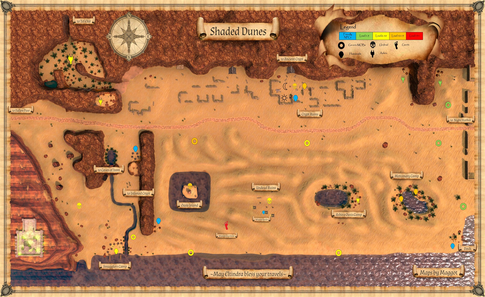
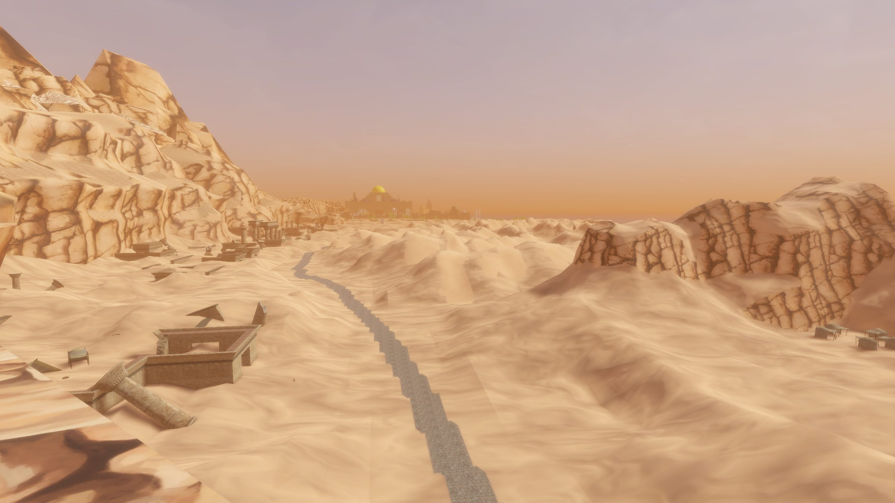

Shaded Dunes
Sand dunes to the west of Night Harbor filled with many dangers.
Map


Named mobs
| Named | Lvl | Race / class | Where | Known loot (hover) |
|---|---|---|---|---|
| Dhajr Spitemaw | 8+ | Ashira | Large Ashira Camp | Claw of the Ashira Hunter, Spitemaw's Ring |
| Toma the Two-Faced | 9+ | Wererat | Smugglers Camp | Toma's Signet Ring, Smuggler's Damaged Logbook, Filthy Cloth Hood |
| Chompers | ~16 | Crocodile | Crocs and Caimans | Chompers' Tooth, Chomper's Hide |
| Yezkiel the Gatekeeper | 20+ | Skeleton | Oasis Island | Dark Buckler, Sindr's Horn, Dark Tower Shield, Grimoire of Demonology |
| Blackscale | 28 | Snake | Oasis Island Water | |
| a shimmering shadow | ~30 | Shadow / Enchanter | Ruins between Ancient Crypt entrance and Tel Ekir valley | Shimmering Shadow Veil, Moonwhisper Knot, Shimmering Scimitar, Umbracast Greaves |
| Maleq | ~40 | Sand Giant | - | Giant Fire Wedding Ring, Sand Giant's Napkin, Maleq's Toothpick, Sand-Blasted Coif, Duneshaper Gauntlets |
Mobs & NPCs (camps by level)
Rows with a level are huntable camps; rows without are usually town NPCs or not yet documented.
| Name | Lvl | Race | Class | Where | Notes |
|---|---|---|---|---|---|
| a desert bat | 1 | Human | - | - | |
| a jackal pup | 1 | Jackal | - | - | |
| a large rat | 1 | Rat | - | - | |
| a rotting skeleton | 1 | Skeleton | - | - | |
| a spiderling | 2 | Spider | - | - | |
| a crocodile hatchling | 3-4 | Crocodile | - | Coastline | |
| a dunes scarab | 3 | Scarab | - | - | Only at Night |
| a large dunes bat | 3 | Bat | - | - | |
| a jackal | 4 | Jackal | - | - | |
| a rattlesnake | 4 | Snake | - | - | |
| a caiman | ~8-9 | Crocodile | - | Coastline | |
| a bandit | 10-13 | Human, Ogre | Fighter, Archer, Cleric, Shaman, Wizard | - | |
| a dunes madman | 10 | Human | - | - | |
| a giant dunes scarab | 10 | Scarab | - | - | |
| a crocodile | 12-13 | Crocodile | - | Coastline | |
| a ghoul | 14-16 | Ghoul | - | Oasis Island | |
| a shadow | 25-27 | Shadow | - | Ruins between Ancient Crypt entrance and Tel Ekir valley | |
| a water viper | 26 | Snake | - | Oasis Island water | |
| a sand giant scout | ~35 | Giant | - | - | |
| Ojamar Antorious | 60 | Human | - | Wizard Spire | Spell Merchant |
| Cheikho | - | Human | - | Hunter Camp | Merchant |
| Head Researcher Aashir | - | Human | - | Ancient Crypt Entrance | Quest NPC, Only at Day |
| a blister beetle | - | Beetle | - | - | |
| a burned skeleton | - | Skeleton | - | Undead Ruins | |
| a cultist | - | Human | Fighter, Cleric, Wizard | Ancient Crypt Entrance | Only at Night |
| a famished zombie | - | Zombie | - | Undead Ruins | |
| a fire beetle | - | Human | - | - | |
| a giant spider | - | Spider | - | - | |
| a grave mummy | - | Zombie | - | Undead Ruins | |
| a hunter | - | Human | - | Hunter Camp | |
| a researcher | - | Human | - | Ancient Crypt Entrance | Only at Day |
| a risen commander | - | Skeleton | - | Ancient Crypt Entrance | Only at Night |
| a risen deacon | - | Skeleton | Cleric | Ancient Crypt Entrance | Only at Night |
| a risen guard | - | Skeleton | - | Ancient Crypt Entrance | Only at Night |
| a risen officer | - | Skeleton | - | Ancient Crypt Entrance | Only at Night |
| a risen thaumaturgist | - | Skeleton | Wizard | Ancient Crypt Entrance | Only at Night |
| a senior researcher | - | Human | - | Ancient Crypt Entrance | Only at Day |
| a sickened ashira | - | Ashira | - | - | |
| a snake | - | Snake | - | - | |
| a theologian | - | Human | - | Ancient Crypt Entrance | Only at Day |
| a willowisp | - | Wisp | - | - | Only at night |
| an archaeologist | - | Human | - | Ancient Crypt Entrance | Only at Day |
| an ashira ambusher | - | Ashira | - | - | |
| an ashira lookout | - | Ashira | - | - | |
| an ashira scout | - | Ashira | - | - | |
| an ashira spearfisher | - | Ashira | - | - | |
| an ashira warrior | - | Ashira | - | - |
Quests
| Quest | Reward | Giver | Min lvl |
|---|---|---|---|
| Chompers' Hide Tunic Quest | Chompers' Hide Tunic | Cheikho | 1 |
| Escort Head Researcher Aashir | Aashir's Earring | Head Researcher Aashir | 15 |
Gear that drops here
| Slot | Item | Key stats (wiki) | How to get | Lvl | Classes |
|---|---|---|---|---|---|
| Neck | Ashira Scout Necklace | no stats listed on wiki | Quest: Archer Starter Quest (Night Harbor) (-, Night Harbor, min lvl 1) Quest: Monk Starter Quest (Night Harbor) (-, Night Harbor, min lvl 1) Quest: Night Harbor Drop: an ashira scout (lvl 2) — Night Harbor, Noob Yard | 1 | All classes |
| Wrist | Ashira Warrior Bracer | AC 2 | Quest: Ashira Warrior Bracer Quest (Quartermaster Obaid, Night Harbor, min lvl 1) Quest: Fighter Starter Quest (Night Harbor) (-, Night Harbor, min lvl 1) Drop: an ashira spearfisher (lvl -) — Shaded Dunes, - Drop: an ashira warrior (lvl -) — Shaded Dunes, - | 1 | ARC BRD BST CLR DRU FTR INQ MNK PAL RNG ROG SHD SHM SPB |
| Neck | Ashira Warrior Necklace | no stats listed on wiki | Quest: Archer Starter Quest (Night Harbor) (-, Night Harbor, min lvl 1) Quest: Night Harbor Drop: an ashira warrior (lvl -) — Shaded Dunes, - Drop: an ashira warrior (lvl 6-7) — Sungreet Strand, - | 1 | All classes |
| Bat Wing | no stats listed on wiki | Quest: Druid Starter Quest (Faelindral) (Sylvarya Starveil, Faelindral, min lvl 1) Quest: Druid Starter Quest (Night Harbor) (Rolan Talmula, Night Harbor, min lvl 1) Quest: Ranger Starter Quest (Night Harbor) (-, Night Harbor, min lvl 1) Drop: a desert bat (lvl 1) — Night Harbor, Noob Yard | 1 | DRU ENC RNG SHM WIZ | |
| Bone Chips | no stats listed on wiki | Quest: Bone Chips for Moon Dances (Moon Dances, Faelindral, min lvl 1) Quest: Bone Chips for Squire Ryland (Squire Ryland, Night Harbor, min lvl 1) Quest: Druid Starter Quest (Faelindral) (Sylvarya Starveil, Faelindral, min lvl 1) Quest: Find Delilah's Pet (Delilah, Underdocks, min lvl 1) | 1 | NEC SHD | |
| Chest | Chompers Hide Tunic | AC 14, STR +3, STA +3, DEX +3 | Quest: Chompers' Hide Tunic Quest (Cheikho, Shaded Dunes, min lvl 1) Named drop: Chompers (lvl ~16) — Shaded Dunes, Crocs and Caimans | 1 | ARC BRD BST CLR DRU FTR INQ MNK PAL RNG ROG SHD SHM SPB |
| Primary, Secondary | Cracked Staff | DMG 6 / DLY 33 | Drop: A rotting skeleton (lvl 1) — Night Harbor, Noob Yard Drop: a risen skeleton (lvl 13) — Night Harbor, Crypt (Night) Drop: an ashira lookout (lvl -) — Sungreet Strand, - Drop: an ashira warrior (lvl 6-7) — Sungreet Strand, - | 1 | All classes |
| Primary, Secondary, Range, Belt | Fire Beetle Eye | Effect: Fire Beetle Eye (Passive. Must Equip. Level: 1) | Quest: Druid Starter Quest (Faelindral) (Sylvarya Starveil, Faelindral, min lvl 1) Quest: Druid Starter Quest (Night Harbor) (Rolan Talmula, Night Harbor, min lvl 1) Quest: Fighter Starter Quest (Night Harbor) (-, Night Harbor, min lvl 1) Quest: Ranger Starter Quest (Night Harbor) (-, Night Harbor, min lvl 1) | 1 | All classes |
| Fire Beetle Gland | no stats listed on wiki | Quest: Shaman Starter Quest (Night Harbor) (Errol Shrewtender, Night Harbor, min lvl 1) Drop: a fire beetle (lvl 2) — Night Harbor, Noob Yard Drop: a fire beetle (lvl -) — Shaded Dunes, - Drop: a fire beetle (lvl unconfirmed) — Sungreet Strand | 1 | All classes | |
| Primary, Secondary | Rusty Axe | DMG 6 / DLY 42 | Drop: A skeletal warrior (lvl 4 - 11) — Tomb of the Last Wyrmsbane, - Drop: A skeletal cleric (lvl -) — Tomb of the Last Wyrmsbane, - Drop: A skeletal fighter (lvl 3 - 10) — Tomb of the Last Wyrmsbane, - Drop: a skeletal priest (lvl -) — Tomb of the Last Wyrmsbane, - | 1 | BST FTR INQ PAL RNG SHD SPB |
| Primary | Rusty Battle Axe | DMG 10 / DLY 54 | Drop: A rotting skeleton (lvl 1) — Night Harbor, Noob Yard Drop: an ashira warrior (lvl -) — Night Harbor, Noob Yard Drop: A skeletal warrior (lvl 4 - 11) — Tomb of the Last Wyrmsbane, - Drop: a skeletal deacon (lvl -) — Tomb of the Last Wyrmsbane, - | 1 | BST FTR INQ PAL SHD |
| Primary, Secondary | Rusty Dagger | DMG 4 / DLY 24 | Vendor: A scrap dealer — Evershade Weald; A used weapons dealer — Night Harbor, Shallow Shoals; Evershade Weald Drop: an ashira warrior (lvl 6-7) — Sungreet Strand, - Drop: a Bloodynose quarreler (lvl ~8-10) — Sungreet Strand, Tel Ekir Goblin Entrance Drop: a sullen farmhand (lvl unconfirmed) — Sungreet Strand | 1 | ARC BRD BST ELE ENC FTR INQ NEC RNG ROG SHD SHM SPB WIZ |
| Primary | Rusty Great Scythe | DMG 8 / DLY 46 | Drop: A rotting skeleton (lvl 1) — Night Harbor, Noob Yard Drop: a market peddler (lvl unconfirmed) — Night Harbor Drop: A skeletal warrior (lvl 4 - 11) — Tomb of the Last Wyrmsbane, - Drop: a skeletal monk (lvl -) — Tomb of the Last Wyrmsbane, - | 1 | BST DRU FTR INQ NEC RNG SHD SPB |
| Primary | Rusty Greatsword | DMG 9 / DLY 50 | Drop: a skeleton (lvl unconfirmed) — Shaded Dunes Drop: a stumbling zombie (lvl unconfirmed) — Shaded Dunes Drop: a bandit (lvl 10-13) — Shaded Dunes, - Drop: a smuggler (lvl unconfirmed) — Shaded Dunes | 1 | ARC BRD BST FTR INQ PAL RNG SHD SPB |
| Primary | Rusty Long Spear | DMG 9 / DLY 48 | Drop: an ashira warrior (lvl 6-7) — Sungreet Strand, - Drop: a Bloodynose quarreler (lvl ~8-10) — Sungreet Strand, Tel Ekir Goblin Entrance Drop: an ashira lookout (lvl -) — Sungreet Strand, - Drop: an ashira shaman (lvl -) — Sungreet Strand, - | 1 | ARC BRD BST FTR INQ RNG ROG SHD SHM |
| Primary, Secondary | Rusty Longsword | DMG 6 / DLY 38 | Drop: an ashira shaman (lvl -) — Sungreet Strand, - Drop: an ashira warrior (lvl 6-7) — Sungreet Strand, - Drop: a Bloodynose quarreler (lvl ~8-10) — Sungreet Strand, Tel Ekir Goblin Entrance Drop: an ashira lookout (lvl -) — Sungreet Strand, - | 1 | ARC BRD BST FTR INQ PAL RNG ROG SHD SPB WIZ |
| Primary, Secondary | Rusty Mace | DMG 6 / DLY 40 | Vendor: A scrap dealer — Evershade Weald; A used weapons dealer — Night Harbor, Shallow Shoals; Evershade Weald Drop: an ashira lookout (lvl -) — Sungreet Strand, - Drop: an ashira shaman (lvl -) — Sungreet Strand, - Drop: a Bloodynose quarreler (lvl ~8-10) — Sungreet Strand, Tel Ekir Goblin Entrance | 1 | BRD BST CLR DRU FTR INQ MNK PAL RNG ROG SHD SHM SPB |
| Primary | Rusty Maul | DMG 10 / DLY 52 | Drop: A skeletal cavalier (lvl 6 - 10) — Tomb of the Last Wyrmsbane, - Drop: A skeletal fighter (lvl 3 - 10) — Tomb of the Last Wyrmsbane, - Drop: a skeletal deacon (lvl -) — Tomb of the Last Wyrmsbane, - Drop: a skeletal warrior (lvl 4 - 11) — Tomb of the Last Wyrmsbane, - | 1 | BRD BST CLR DRU FTR INQ MNK PAL RNG ROG SHD SHM SPB |
| Primary, Secondary | Rusty Scimitar | DMG 5 / DLY 36 | Drop: A rotting skeleton (lvl 1) — Night Harbor, Noob Yard Drop: a goblin troublemaker (lvl 9) — Night Harbor, Docks Drop: a stumbling zombie (lvl unconfirmed) — Shaded Dunes Drop: a skeleton (lvl unconfirmed) — Shaded Dunes | 1 | ARC BRD BST DRU FTR INQ PAL RNG ROG SHD SPB WIZ |
| Primary, Secondary | Rusty Scythe | DMG 4 / DLY 28 | Drop: a skeleton (lvl unconfirmed) — Shaded Dunes Drop: a bandit (lvl 10-13) — Shaded Dunes, - Drop: an ashira warrior (lvl -) — Shaded Dunes, - Drop: a wererat (lvl unconfirmed) — Shaded Dunes | 1 | BST DRU FTR INQ NEC RNG SHD SPB |
| Primary, Secondary | Rusty Shortsword | DMG 4 / DLY 26 | Vendor: A scrap dealer — Evershade Weald; A used weapons dealer — Night Harbor, Shallow Shoals; Evershade Weald Drop: an ashira warrior (lvl 6-7) — Sungreet Strand, - Drop: an ashira lookout (lvl -) — Sungreet Strand, - Drop: a hired thug (lvl 9-10) — Sungreet Strand, Ameen Farm | 1 | ARC BRD BST FTR INQ PAL RNG ROG SHD SHM SPB WIZ |
| Primary, Secondary | Rusty Spear | DMG 5 / DLY 34 | Vendor: A scrap dealer — Evershade Weald; Evershade Weald; a scrap dealer Drop: an ashira warrior (lvl 6-7) — Sungreet Strand, - Drop: an ashira lookout (lvl -) — Sungreet Strand, - Drop: a rotting skeleton (lvl unconfirmed) — Sungreet Strand | 1 | ARC BRD BST FTR INQ RNG ROG SHD SHM |
| Secondary | Rusty Tower Shield | AC 4 | Drop: an ashira lookout (lvl -) — Sungreet Strand, - Drop: a Bloodynose quarreler (lvl ~8-10) — Sungreet Strand, Tel Ekir Goblin Entrance Drop: an ashira warrior (lvl 6-7) — Sungreet Strand, - Drop: a Bloodynose fumer (lvl ~8-10) — Sungreet Strand, Tel Ekir Goblin Entrance | 1 | FTR INQ PAL SHD |
| Primary, Secondary | Rusty Trident | DMG 5 / DLY 32 | Drop: an ashira lookout (lvl -) — Sungreet Strand, - Drop: an ashira warrior (lvl 6-7) — Sungreet Strand, - Drop: a Bloodynose quarreler (lvl ~8-10) — Sungreet Strand, Tel Ekir Goblin Entrance Drop: an ashira shaman (lvl -) — Sungreet Strand, - | 1 | ARC BRD BST FTR INQ RNG ROG SHD SHM |
| Primary | Rusty War Lance | DMG 9 / DLY 48 | Drop: an ashira warrior (lvl 6-7) — Sungreet Strand, - Drop: a hired thug (lvl 9-10) — Sungreet Strand, Ameen Farm Drop: a rotting skeleton (lvl unconfirmed) — Sungreet Strand Drop: an ashira lookout (lvl -) — Sungreet Strand, - | 1 | FTR INQ PAL SHD |
| Primary, Secondary | Rusty Warhammer | DMG 4 / DLY 30 | Drop: A skeletal fighter (lvl 3 - 10) — Tomb of the Last Wyrmsbane, - Drop: A skeletal marksman (lvl -) — Tomb of the Last Wyrmsbane, - Drop: a skeletal warrior (lvl 4 - 11) — Tomb of the Last Wyrmsbane, - Drop: a skeletal monk (lvl -) — Tomb of the Last Wyrmsbane, - | 1 | BRD BST CLR DRU FTR INQ MNK PAL RNG ROG SHD SHM SPB |
| Waist | Tattered Cloth Belt | AC 1 | Drop: A rotting skeleton (lvl 1) — Night Harbor, Noob Yard Drop: a cackling skeleton (lvl 15) — Night Harbor, Crypt (Night) Drop: a goblin troublemaker (lvl 9) — Night Harbor, Docks Drop: an ashira scout (lvl 2) — Night Harbor, Noob Yard | 1 | All classes |
| Feet | Tattered Cloth Boots | AC 1 | Drop: A rotting skeleton (lvl 1) — Night Harbor, Noob Yard Drop: an ashira scout (lvl 2) — Night Harbor, Noob Yard Drop: a goblin drunk (lvl -) — Night Harbor, Docks Drop: a goblin squatter (lvl 10) — Night Harbor, Docks | 1 | All classes |
| Wrist | Tattered Cloth Bracer | AC 1 | Drop: A skeletal fighter (lvl 3 - 10) — Tomb of the Last Wyrmsbane, - Drop: A skeletal warrior (lvl 4 - 11) — Tomb of the Last Wyrmsbane, - Drop: A skeletal cleric (lvl -) — Tomb of the Last Wyrmsbane, - Drop: A skeletal knight (lvl -) — Tomb of the Last Wyrmsbane, - | 1 | All classes |
| Head | Tattered Cloth Cap | AC 1 | Drop: A rotting skeleton (lvl 1) — Night Harbor, Noob Yard Drop: a goblin squatter (lvl 10) — Night Harbor, Docks Drop: a goblin troublemaker (lvl 9) — Night Harbor, Docks Drop: a goblin drunk (lvl -) — Night Harbor, Docks | 1 | All classes |
| Back | Tattered Cloth Cape | AC 1 | Drop: A rotting skeleton (lvl 1) — Night Harbor, Noob Yard Drop: a risen skeleton (lvl 13) — Night Harbor, Crypt (Night) Drop: a cackling skeleton (lvl 15) — Night Harbor, Crypt (Night) Drop: a goblin drunk (lvl -) — Night Harbor, Docks | 1 | All classes |
| Hands | Tattered Cloth Gloves | AC 1 | Drop: A rotting skeleton (lvl 1) — Night Harbor, Noob Yard Drop: a begrudging farmer (lvl unconfirmed) — Night Harbor Drop: a stumbling skeleton (lvl 14) — Night Harbor, Crypt (Night) Drop: a goblin drunk (lvl -) — Night Harbor, Docks | 1 | All classes |
| Neck | Tattered Cloth Gorget | AC 1 | Drop: A rotting skeleton (lvl 1) — Night Harbor, Noob Yard Drop: a goblin drunk (lvl -) — Night Harbor, Docks Drop: a goblin troublemaker (lvl 9) — Night Harbor, Docks Drop: a goblin squatter (lvl 10) — Night Harbor, Docks | 1 | All classes |
| Shoulders | Tattered Cloth Mantle | AC 1 | Drop: A skeletal fighter (lvl 3 - 10) — Tomb of the Last Wyrmsbane, - Drop: A skeletal monk (lvl -) — Tomb of the Last Wyrmsbane, - Drop: A skeletal warrior (lvl 4 - 11) — Tomb of the Last Wyrmsbane, - Drop: A skeletal defender (lvl -) — Tomb of the Last Wyrmsbane, - | 1 | All classes |
| Legs | Tattered Cloth Pantaloons | AC 1 | Drop: A skeletal fighter (lvl 3 - 10) — Tomb of the Last Wyrmsbane, - Drop: A skeletal warrior (lvl 4 - 11) — Tomb of the Last Wyrmsbane, - Drop: A skeletal defender (lvl -) — Tomb of the Last Wyrmsbane, - Drop: A skeletal cavalier (lvl 6 - 10) — Tomb of the Last Wyrmsbane, - | 1 | All classes |
| Chest | Tattered Cloth Robe | AC 2 | Drop: A rotting skeleton (lvl 1) — Night Harbor, Noob Yard Drop: a cackling skeleton (lvl 15) — Night Harbor, Crypt (Night) Drop: a goblin squatter (lvl 10) — Night Harbor, Docks Drop: a goblin gambler (lvl -) — Night Harbor, Docks | 1 | ELE ENC NEC WIZ |
| Shirt | Tattered Cloth Shirt | no stats listed on wiki | Drop: A rotting skeleton (lvl 1) — Night Harbor, Noob Yard Drop: a stumbling skeleton (lvl 14) — Night Harbor, Crypt (Night) Drop: a cackling skeleton (lvl 15) — Night Harbor, Crypt (Night) Drop: a goblin troublemaker (lvl 9) — Night Harbor, Docks | 1 | All classes |
| Chest | Tattered Cloth Tunic | AC 2 | Drop: A skeletal cleric (lvl -) — Tomb of the Last Wyrmsbane, - Drop: A skeletal fighter (lvl 3 - 10) — Tomb of the Last Wyrmsbane, - Drop: A skeletal warrior (lvl 4 - 11) — Tomb of the Last Wyrmsbane, - Drop: A skeletal priest (lvl -) — Tomb of the Last Wyrmsbane, - | 1 | All classes |
| Face | Tattered Cloth Veil | AC 1 | Drop: A rotting skeleton (lvl 1) — Night Harbor, Noob Yard Drop: a cackling skeleton (lvl 15) — Night Harbor, Crypt (Night) Drop: a goblin drunk (lvl -) — Night Harbor, Docks Drop: a goblin squatter (lvl 10) — Night Harbor, Docks | 1 | All classes |
| Finger | Toma's Signet Ring | AC 1 | Quest: Night Harbor Quest: Rogue Starter Quest (Night Harbor) (Sinastin Aspenleaf, Night Harbor, min lvl 1) Named drop: Toma the Two-Faced (lvl 9+) — Shaded Dunes, Smugglers Camp | 1 | All classes |
| Primary, Secondary | Torch | Effect: Torch (Passive. Must Equip. Level: 1) | Quest: Pests at the Farm (Farmer Ammar, Night Harbor, min lvl 1) Vendor: A goods merchant — Night Harbor, Shallow Shoals; A greedy halfling — Night Harbor; A shifty elf — Evershade Weald Crafted: Survival (trivial X) Drop: A rotting skeleton (lvl 1) — Night Harbor, Noob Yard | 1 | All classes |
| Secondary | Worn Buckler | AC 2 | Drop: an ashira shaman (lvl -) — Sungreet Strand, - Drop: an ashira lookout (lvl -) — Sungreet Strand, - Drop: an ashira warrior (lvl 6-7) — Sungreet Strand, - Drop: a Bloodynose scarer (lvl ~8-10) — Sungreet Strand, Tel Ekir Goblin Entrance | 1 | BRD BST CLR DRU FTR INQ PAL RNG ROG SHD SHM SPB |
| Primary | Worn Great Staff | DMG 10 / DLY 39 | Drop: an ashira shaman (lvl -) — Sungreet Strand, - Drop: an ashira warrior (lvl 6-7) — Sungreet Strand, - Drop: a Bloodynose quarreler (lvl ~8-10) — Sungreet Strand, Tel Ekir Goblin Entrance Drop: a smarmy hunter (lvl unconfirmed) — Sungreet Strand | 1 | BST CLR DRU ELE ENC FTR MNK NEC PAL SHM SPB WIZ |
| Bag | Smuggler's Damaged Logbook | no stats listed on wiki | Quest: Spellblade Starter Quest (Night Harbor) (Torn Note, Night Harbor, min lvl 1) Named drop: Toma the Two-Faced (lvl 9+) — Shaded Dunes, Smugglers Camp | 1 | class unconfirmed |
| Secondary | Rusty Kite Shield | AC 3 | Drop: an ashira shaman (lvl -) — Sungreet Strand, - Drop: an ashira warrior (lvl 6-7) — Sungreet Strand, - Drop: a Bloodynose scarer (lvl ~8-10) — Sungreet Strand, Tel Ekir Goblin Entrance Drop: a filthy henchman (lvl unconfirmed) — Sungreet Strand | 3 | BRD CLR FTR INQ PAL RNG SHD |
| Waist | Tattered Rawhide Belt | AC 1 | Drop: A skeletal warrior (lvl 4 - 11) — Tomb of the Last Wyrmsbane, - Drop: A skeletal monk (lvl -) — Tomb of the Last Wyrmsbane, - Drop: a skeletal cleric (lvl -) — Tomb of the Last Wyrmsbane, - Drop: a risen zombie (lvl -) — Tomb of the Last Wyrmsbane, - | 3 | ARC BRD BST CLR DRU FTR INQ MNK PAL RNG ROG SHD SHM SPB |
| Back | Tattered Rawhide Cloak | AC 1 | Drop: A skeletal marksman (lvl -) — Tomb of the Last Wyrmsbane, - Drop: A skeletal warrior (lvl 4 - 11) — Tomb of the Last Wyrmsbane, - Drop: A skeletal cavalier (lvl 6 - 10) — Tomb of the Last Wyrmsbane, - Drop: A skeletal cleric (lvl -) — Tomb of the Last Wyrmsbane, - | 3 | ARC BRD BST CLR DRU FTR INQ MNK PAL RNG ROG SHD SHM SPB |
| Feet | Tattered Rawhide Boots | AC 2 | Drop: A skeletal warrior (lvl 4 - 11) — Tomb of the Last Wyrmsbane, - Drop: A skeletal cleric (lvl -) — Tomb of the Last Wyrmsbane, - Drop: A skeletal archer (lvl -) — Tomb of the Last Wyrmsbane, - Drop: A skeletal cavalier (lvl 6 - 10) — Tomb of the Last Wyrmsbane, - | 4 | ARC BRD BST CLR DRU FTR INQ MNK PAL RNG ROG SHD SHM SPB |
| Wrist | Tattered Rawhide Bracer | AC 2 | Drop: A skeletal warrior (lvl 4 - 11) — Tomb of the Last Wyrmsbane, - Drop: A skeletal defender (lvl -) — Tomb of the Last Wyrmsbane, - Drop: A skeletal marksman (lvl -) — Tomb of the Last Wyrmsbane, - Drop: a skeletal priest (lvl -) — Tomb of the Last Wyrmsbane, - | 4 | ARC BRD BST CLR DRU FTR INQ MNK PAL RNG ROG SHD SHM SPB |
| Head | Tattered Rawhide Cap | AC 2 | Drop: A skeletal warrior (lvl 4 - 11) — Tomb of the Last Wyrmsbane, - Drop: A skeletal marksman (lvl -) — Tomb of the Last Wyrmsbane, - Drop: a skeletal knight (lvl -) — Tomb of the Last Wyrmsbane, - Drop: a risen zombie (lvl -) — Tomb of the Last Wyrmsbane, - | 4 | ARC BRD BST CLR DRU FTR INQ MNK PAL RNG ROG SHD SHM SPB |
| Hands | Tattered Rawhide Gloves | AC 2 | Drop: A skeletal warrior (lvl 4 - 11) — Tomb of the Last Wyrmsbane, - Drop: A skeletal priest (lvl -) — Tomb of the Last Wyrmsbane, - Drop: A skeletal marksman (lvl -) — Tomb of the Last Wyrmsbane, - Drop: a skeletal monk (lvl -) — Tomb of the Last Wyrmsbane, - | 4 | ARC BRD BST CLR DRU FTR INQ MNK PAL RNG ROG SHD SHM SPB |
| Neck | Tattered Rawhide Gorget | AC 1 | Drop: a skeleton (lvl unconfirmed) — Sungreet Strand Drop: an ashira warrior (lvl 6-7) — Sungreet Strand, - Drop: a Bloodynose quarreler (lvl ~8-10) — Sungreet Strand, Tel Ekir Goblin Entrance Drop: a hired thug (lvl 9-10) — Sungreet Strand, Ameen Farm | 4 | ARC BRD BST CLR DRU FTR INQ MNK PAL RNG ROG SHD SHM SPB |
| Legs | Tattered Rawhide Leggings | AC 2 | Drop: A skeletal warrior (lvl 4 - 11) — Tomb of the Last Wyrmsbane, - Drop: A skeletal monk (lvl -) — Tomb of the Last Wyrmsbane, - Drop: A skeletal defender (lvl -) — Tomb of the Last Wyrmsbane, - Drop: A skeletal priest (lvl -) — Tomb of the Last Wyrmsbane, - | 4 | ARC BRD BST CLR DRU FTR INQ MNK PAL RNG ROG SHD SHM SPB |
| Face | Tattered Rawhide Mask | AC 1 | Drop: A skeletal marksman (lvl -) — Tomb of the Last Wyrmsbane, - Drop: A skeletal warrior (lvl 4 - 11) — Tomb of the Last Wyrmsbane, - Drop: A skeletal cavalier (lvl 6 - 10) — Tomb of the Last Wyrmsbane, - Drop: a skeletal monk (lvl -) — Tomb of the Last Wyrmsbane, - | 4 | ARC BRD BST CLR DRU FTR INQ MNK PAL RNG ROG SHD SHM SPB |
| Shoulders | Tattered Rawhide Shoulderpads | AC 2 | Drop: A skeletal warrior (lvl 4 - 11) — Tomb of the Last Wyrmsbane, - Drop: A risen zombie (lvl -) — Tomb of the Last Wyrmsbane, - Drop: A skeletal marksman (lvl -) — Tomb of the Last Wyrmsbane, - Drop: A skeletal priest (lvl -) — Tomb of the Last Wyrmsbane, - | 4 | ARC BRD BST CLR DRU FTR INQ MNK PAL RNG ROG SHD SHM SPB |
| Chest | Tattered Rawhide Tunic | AC 3 | Drop: A skeletal marksman (lvl -) — Tomb of the Last Wyrmsbane, - Drop: A skeletal warrior (lvl 4 - 11) — Tomb of the Last Wyrmsbane, - Drop: a skeletal vicar (lvl -) — Tomb of the Last Wyrmsbane, - Drop: a risen zombie (lvl -) — Tomb of the Last Wyrmsbane, - | 4 | ARC BRD BST CLR DRU FTR INQ MNK PAL RNG ROG SHD SHM SPB |
| Shirt | Tattered Rawhide Vest | no stats listed on wiki | Drop: A skeletal warrior (lvl 4 - 11) — Tomb of the Last Wyrmsbane, - Drop: A skeletal knight (lvl -) — Tomb of the Last Wyrmsbane, - Drop: a skeletal priest (lvl -) — Tomb of the Last Wyrmsbane, - Drop: a skeletal defender (lvl -) — Tomb of the Last Wyrmsbane, - | 4 | ARC BRD BST CLR DRU FTR INQ MNK PAL RNG ROG SHD SHM SPB |
| Primary, Secondary | Corroded Bronze Axe | DMG 9 / DLY 42 | Drop: a bulky bandit (lvl 26) — Scarwood, - Drop: a risen commander (lvl -) — Shaded Dunes, Ancient Crypt Entrance Drop: an ashira warrior (lvl 6-7) — Sungreet Strand, - Drop: an ashira preserver (lvl -) — Sungreet Strand, - | 6 | BST FTR INQ PAL RNG SHD SPB |
| Primary, Secondary | Corroded Bronze Dagger | DMG 5 / DLY 24 | Drop: an ashira ain guard (lvl -) — Tel Ekir, - Drop: an ashira naturalist (lvl -) — Tel Ekir, - Drop: a skeletal acolyte (lvl 17) — Ancient Crypt, - Drop: a skeletal soldier (lvl 17) — Ancient Crypt, - | 6 | ARC BRD BST ELE ENC FTR NEC RNG ROG SHD SHM SPB WIZ |
| Primary | Corroded Bronze Great Scythe | DMG 12 / DLY 46 | Drop: a skeletal soldier (lvl 17) — Ancient Crypt, - Drop: a skeletal acolyte (lvl 17) — Ancient Crypt, - Drop: a ghastly cook (lvl 16) — Ancient Crypt, - Drop: a cultist (lvl -) — Shaded Dunes, Ancient Crypt Entrance | 6 | BST DRU FTR INQ NEC RNG SHD SPB |
| Shirt | Corroded Bronze Plate Arming Doublet | no stats listed on wiki | Drop: a skeletal soldier (lvl 17) — Ancient Crypt, - Drop: a skeletal guard (lvl ~12-15) — Ancient Crypt, - Drop: a Muggrah brawler (lvl 20+) — Sungreet Strand, Muggrah Mountain Camp Drop: an ashira warrior (lvl 6-7) — Sungreet Strand, - | 6 | CLR FTR INQ PAL SHD |
| Primary, Secondary | Corroded Bronze Scimitar | DMG 7 / DLY 36 | Drop: an ashira ain guard (lvl -) — Tel Ekir, - Drop: an ashira naturalist (lvl -) — Tel Ekir, - Drop: a Bloodynose witch doctor (lvl 15) — Tel Ekir, - Drop: a Bloodynose frightener (lvl ~15-18) — Tel Ekir, - | 6 | ARC BRD BST DRU FTR INQ PAL RNG ROG SHD SPB WIZ |
| Primary, Secondary | Corroded Bronze Scythe | DMG 6 / DLY 28 | Drop: a skeletal soldier (lvl 17) — Ancient Crypt, - Drop: a fallen sentinel (lvl 19) — Ancient Crypt, - Drop: a Muggrah brawler (lvl 20+) — Sungreet Strand, Muggrah Mountain Camp Drop: an ashira warrior (lvl 6-7) — Sungreet Strand, - | 6 | BST DRU FTR INQ NEC RNG SHD SPB |
| Back | Tattered Hide Cloak | AC 2 | Drop: a Bloodchain sentry (lvl unconfirmed) — Blacktide Bay Drop: a Blacktide brute (lvl unconfirmed) — Blacktide Bay Drop: a shady farmer (lvl -) — Keeper's Bight, Farms, south of Penshaw Drop: a Blacktide raider (lvl 23-24) — Keeper's Bight, - | 6 | ARC BRD BST CLR DRU FTR INQ MNK PAL RNG ROG SHD SHM SPB |
| Chest | Tattered Hide Tunic | AC 7 | Drop: a shady farmer (lvl -) — Keeper's Bight, Farms, south of Penshaw Drop: a poacher pathfinder (lvl 28-30) — Keeper's Bight, Poacher Camp, Bear Cave Drop: a Sangrel striker (lvl 18-22) — Keeper's Bight, - Drop: a bulky bandit (lvl 26) — Scarwood, - | 6 | ARC BRD BST CLR DRU FTR INQ MNK PAL RNG ROG SHD SHM SPB |
| Range | Worn Fine Wood Bow | DMG 10 / DLY 40 | Named drop: Researcher Harseal (lvl 16) — Ancient Crypt, - Drop: a skeletal acolyte (lvl 17) — Ancient Crypt, - Named drop: Brahson the Butcher (lvl ~17) — Ancient Crypt, - Drop: a skeletal soldier (lvl 17) — Ancient Crypt, - | 6 | ARC BST FTR INQ PAL RNG ROG SHD SPB |
| Secondary | Worn Fine Wood Buckler | AC 6 | Drop: an ashira warrior (lvl 6-7) — Sungreet Strand, - Drop: an ashira luminary (lvl unconfirmed) — Sungreet Strand Drop: an ashira spearthrower (lvl ~20) — Sungreet Strand, - Drop: a gruff farmhand (lvl unconfirmed) — Sungreet Strand | 6 | BRD BST CLR DRU FTR INQ PAL RNG ROG SHD SHM SPB |
| Primary, Secondary | Claw of the Ashira Hunter | DMG 6 / DLY 31, STR +1, AGI +1, DEX +1 | Named drop: Dhajr Spitemaw (lvl 8+) — Shaded Dunes, Large Ashira Camp | 8 | ARC BRD BST FTR INQ PAL RNG ROG SHD SPB WIZ |
| Finger | Spitemaw's Ring | STR +2 | Named drop: Dhajr Spitemaw (lvl 8+) — Shaded Dunes, Large Ashira Camp | 8 | All classes |
| Head | Vespyra's Stone | AC 6, STA +2, SV Corruption +3 | Named drop: Vile Will (lvl 15) — Sungreet Strand, Farms Drop: a dunes madman (lvl 10) — Shaded Dunes, - | 10 | All classes |
| Waist | Tattered Wool Belt | AC 3 | Drop: a goblin bandit (lvl -) — Sungreet Strand, Quarry Drop: a sly farmhand (lvl unconfirmed) — Sungreet Strand Drop: a tavern patron (lvl -) — Sungreet Strand, River pirate tavern Drop: a river pirate (lvl -) — Sungreet Strand, River pirate tavern | 12 | All classes |
| Primary, Secondary, Range, Belt | Cinder Beetle Eye | Effect: Cinder Beetle Eye (Passive. Must Equip. Level: 1) | Drop: a cinder beetle (lvl unconfirmed) — Night Harbor Drop: a cinder beetle (lvl unconfirmed) — Shaded Dunes Drop: a cinder harvester (lvl 14-15) — Sungreet Strand, - Drop: a cinder drone (lvl -) — Sungreet Strand, - | 14 | All classes |
| Shirt | Corroded Bronze Chain Gambeson | no stats listed on wiki | Drop: a ransacker (lvl unconfirmed) — Night Harbor Drop: a scoundrel (lvl unconfirmed) — Night Harbor Drop: a lawbreaker (lvl unconfirmed) — Night Harbor Drop: a river pirate (lvl unconfirmed) — Night Harbor | 14 | BRD CLR FTR INQ PAL RNG ROG SHD SHM |
| Primary, Secondary | Corroded Bronze Mace | DMG 8 / DLY 40 | Drop: a cultist (lvl -) — Shaded Dunes, Ancient Crypt Entrance Drop: a risen deacon (lvl -) — Shaded Dunes, Ancient Crypt Entrance Drop: an ashira alpha (lvl ~14) — Tel Ekir, - Drop: a Bloodynose sergeant (lvl 15) — Tel Ekir, - | 14 | BRD BST CLR DRU FTR INQ MNK PAL RNG ROG SHD SHM SPB |
| Primary | Corroded Bronze Greatsword | DMG 13 / DLY 50 | Drop: a shady farmer (lvl -) — Keeper's Bight, Farms, south of Penshaw Drop: a poacher pathfinder (lvl 28-30) — Keeper's Bight, Poacher Camp, Bear Cave Drop: a Sangrel shadowblade (lvl 18-22) — Keeper's Bight, - Drop: a skeletal soldier (lvl 17) — Ancient Crypt, - | 15 | ARC BRD BST FTR INQ PAL RNG SHD SPB |
| Primary, Secondary | Chompers' Tooth | DMG 6 / DLY 23 | Named drop: Chompers (lvl ~16) — Shaded Dunes, Crocs and Caimans | 16 | ARC BRD BST ELE ENC FTR INQ NEC RNG ROG SHD SHM SPB WIZ |
| Secondary | Dark Buckler | AC 11 | Named drop: Yezkiel the Gatekeeper (lvl 20+) — Shaded Dunes, Oasis Island | 20 | BRD BST CLR DRU FTR INQ PAL RNG ROG SHD SHM SPB |
| Secondary | Dark Tower Shield | AC 11 | Named drop: Yezkiel the Gatekeeper (lvl 20+) — Shaded Dunes, Oasis Island | 20 | BRD BST CLR DRU FTR INQ MNK PAL RNG ROG SHD SHM SPB |
| Primary, Secondary, Belt | Burnt-Out Lightstone | no stats listed on wiki | Drop: a willowisp (lvl -) — Sungreet Strand, - Drop: a willowisp (lvl -) — Keeper's Bight, - Drop: a waning spirit (lvl unconfirmed) — Keeper's Bight Drop: a willowisp (lvl -) — Shaded Dunes, - | 27 | All classes |
| Primary, Secondary, Belt | Great Lightstone | Effect: Lightstone (Passive. Must Equip. Level: 1) | Drop: a willowisp (lvl -) — Shaded Dunes, - Drop: a drifting wisp (lvl ~27) — Caves of Irem, Pyramid Road Drop: a willowisp (lvl -) — Sungreet Strand, - | 27 | All classes |
| Primary, Secondary, Belt | Lightstone | Effect: Lightstone (Passive. Must Equip. Level: 1) | Drop: a willowisp (lvl -) — Sungreet Strand, - Drop: a willowisp (lvl -) — Keeper's Bight, - Drop: a willowisp (lvl -) — Shaded Dunes, - Drop: a drifting wisp (lvl ~27) — Caves of Irem, Pyramid Road | 27 | All classes |
| Range | Moonwhisper Knot | STA +2, CHA +5, Mana +5 | Named drop: a shimmering shadow (lvl ~30) — Shaded Dunes, Ruins between Ancient Crypt entrance and Tel Ekir valley | 30 | All classes |
| Primary, Secondary | Shimmering Scimitar | DMG 12 / DLY 30, STR +2, AGI +3, DEX +2, HP +15 | Named drop: a shimmering shadow (lvl ~30) — Shaded Dunes, Ruins between Ancient Crypt entrance and Tel Ekir valley | 30 | ARC BRD BST DRU FTR INQ PAL RNG ROG SHD SPB WIZ |
| Face | Shimmering Shadow Veil | AC 6, STA +1, AGI +4, DEX +3 | Named drop: a shimmering shadow (lvl ~30) — Shaded Dunes, Ruins between Ancient Crypt entrance and Tel Ekir valley | 30 | ARC BRD BST CLR DRU FTR INQ MNK PAL RNG ROG SHD SHM SPB |
| Legs | Umbracast Greaves | AC 29, STR +4, DEX +1, HP +15 | Named drop: a shimmering shadow (lvl ~30) — Shaded Dunes, Ruins between Ancient Crypt entrance and Tel Ekir valley | 30 | CLR FTR INQ PAL SHD |
| Hands | Duneshaper Gauntlets | AC 29, STA +5, WIS +5 | Named drop: Maleq (lvl ~40) — Shaded Dunes, - Named drop: Maleq (lvl ~40) — Fallen Pass, Beach | 40 | CLR FTR INQ PAL SHD |
| Primary | Maleq's Toothpick | DMG 21 / DLY 40, AC 10, STR +6, STA +2, HP +10, SV Disease +5, SV Poison +5 | Named drop: Maleq (lvl ~40) — Shaded Dunes, - Named drop: Maleq (lvl ~40) — Fallen Pass, Beach | 40 | ARC BRD BST FTR INQ PAL RNG SHD SPB |
| Head | Sand-Blasted Coif | AC 26, STR +6, DEX +4 | Named drop: Maleq (lvl ~40) — Fallen Pass, Beach Named drop: Maleq (lvl ~40) — Shaded Dunes, - | 40 | BRD CLR FTR INQ PAL RNG ROG SHD SHM |
| Back | Sand Giant's Napkin | AC 8, INT +5, WIS +5, HP +10 | Named drop: Maleq (lvl ~40) — Fallen Pass, Beach Named drop: Maleq (lvl ~40) — Shaded Dunes, - | 40 | All classes |
| Primary, Secondary, Range, Belt | Giant Fire Beetle Eye | Effect: Fire Beetle Eye (Passive. Must Equip. Level: 1) | Drop: a giant fire beetle (lvl unconfirmed) — Shaded Dunes | any / ? | All classes |
| Primary, Secondary, Belt | Greater Lightstone | Effect: Lightstone (Passive. Must Equip. Level: 1) | Drop: a willowisp (lvl -) — Shaded Dunes, - | any / ? | All classes |
| Primary, Secondary, Belt | Ornate Cultist Lamp | Effect: Lamp (Passive. Must Equip. Level: 1) | Drop: a cultist (lvl -) — Shaded Dunes, Ancient Crypt Entrance | any / ? | All classes |
Dangers
- fact Highest-level named on the wiki list: Maleq (~40), a shimmering shadow (~30), Blackscale (28).
- fact Monster types (wiki): Ashira, Jackals, Crocodile, Fire Beetles, Scarabs, Snakes, Wererats, Giants.
- strategy The zone spans levels 1–60, so higher mobs share the map with low ones; check con colors before pulling near the named above.
Travel (wiki)
fact Listed in the wiki zone infobox; boat and portal stops are as written there.